在观看本节之前，务必看下第二节中的面向对象程序设计
一个火山程序的构成结构如下:
1. 包定义
1. 文档嵌入行(知道即可无需了解)
2. 文档注释行
3. 类定义
1. 类嵌入行(知道即可无需了解)
2. 类注释行
3. 类成员常量
4. 类成员变量
5. 类成员方法
1. 方法参数
2. 方法局部常量
3. 方法局部变量
4. 语句注释行
5. 语句行
6. 语句嵌入行(知道即可无需了解)
火山视窗程序结构演示：

火山安卓程序结构演示：

1、包
包名为“全名称”，通常名字为“公司名称+软件名称+功能分类”进行命名。例如：“递归.火山软件.主程序”或者“火山软件.文本操作模块”等，只要方便自己后期维护任何命名都可以，但是包名中必须保证至少有一个小数点。

在火山程序中每个源文件都会有一个包名，无法删除且固定于程序首行位置，并且一个源文件只能存在一个包名。

不同源文件的包名可重复，程序会自动将两个文件归位一个包内，相同包名的文件即使不公开类也可以实现跨文件调用。

如果两个火山源文件的包名不一致，则需要公开类才能被其它包的程序访问。

务必注意：在火山安卓程序中“启动类”所处位置的包名，填写后会编译为程序包名，安卓中的程序包名一旦填写后将不能修改，因为随便修改将会导致程序无法正常的升级安装，务必慎重填写。
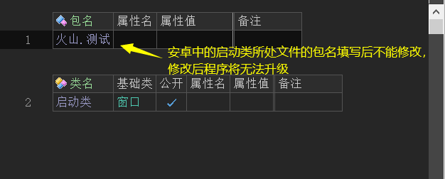
安卓项目中的“启动类”所处文件的包名填写要尽量复杂，建议最少使用两个小数点，防止和其它第三方软件冲突，因为包名冲突后安卓程序会出现无法正常安装的情况。
例如：腾讯QQ的包名为“com.tencent.mobileqq”，则你的软件程序不能使用此包名作为你的程序包名，因为腾讯QQ已经使用。
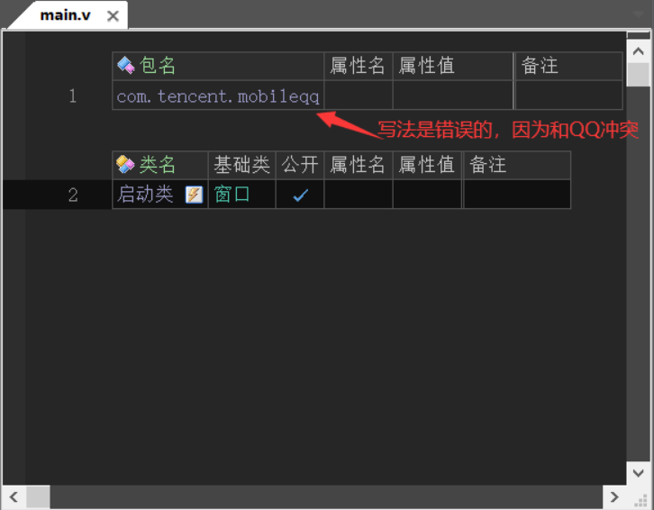
2、注释
火山的注释有以下几种形式：
2.1 以双斜杠“//”字符串引导，说明其处于被注释状态，其以及其中的所有内容(包括直接/间接子成员)在编译时都将被忽略。

2.2 在类外部的程序行，被称为文档注释行。文档注释行的添加，只需要光标定位类名一栏，然后按键盘上的“ins/insert”键就可以插入文档注释行，部分电脑需要按下组合键“Fn+ins”键才可以插入。

2.3 在类内部但是在类方法外部的程序行，被称为类注释行。类注释行的添加同文档注释行一致，光标定位方法名按“ins”键即可。

2.4 在火山代码表格的备注栏输入，也属于注释文本，此注释文本可以在火山代码中被悬浮提示。除了类备注外，方法/变量/常量等备注信息都可以通过提示框显示出来。

2.5 在注释文本中如果以一个或多个减号/等号字符结束，火山将会自动在其后绘制对应长度的单/双分隔线，如下图所示：

3、类
3.1 类的构成
类名为“单名称”，用作定义一个可以具有各种子成员的复合数据类型，各个子成员如下：
(1) 类名。
(2) 类注释行。
(3) 类嵌入行(普通用户无需掌握)。
(4) 成员变量。
(5) 成员常量。
(6) 方法(通常方法/属性读或写方法/事件定义或接收方法/虚拟方法)。
3.2 启动类的定义
“启动类”的类被用作指定用户程序的启动入口类，用户程序将从此处开始执行，启动类在整个用户程序中只能存在一个，并且不允许修改其名称。
不同火山程序的启动类的样式不同，并不是固定的，是由新建项目时模板程序自动生成的，如下所示：
(1) 创建火山视窗“MFC窗口程序”项目时：
会自动生成“启动类”和对应的“主窗口”类，用于视窗程序的启动。
(2) 在创建火山安卓“空窗口”项目时：
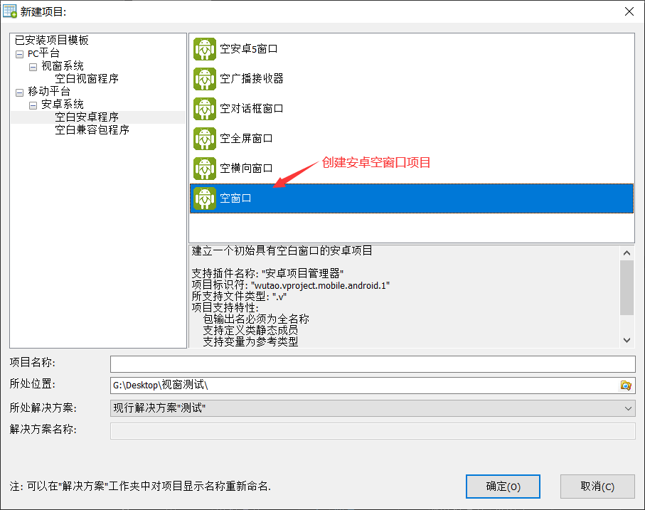
会自动生成“启动类”用于安卓程序的启动。
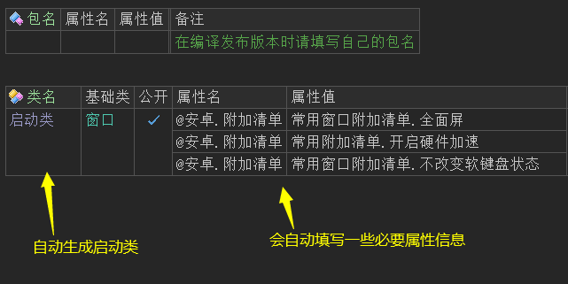
3.3 自定义类
自定义类可使用“ctrl+D”快捷键进行定义，或者鼠标右键选择“插入->插入新类”进行定义类操作。
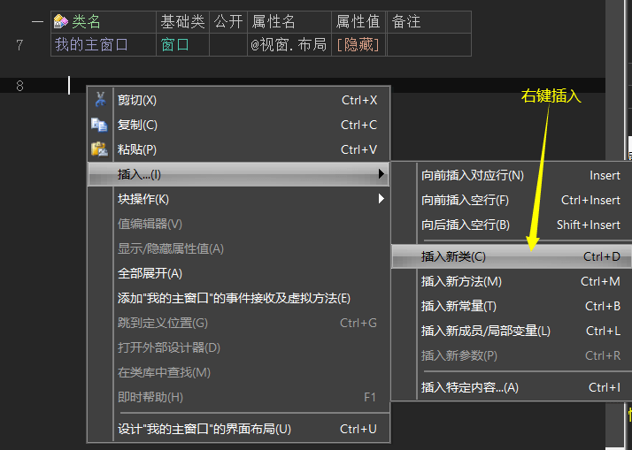
3.4 注意事项
(1) 同一个包中不允许出现相同的类名，如下图所示是错误的。
同项目下，只要包名一致不同文件下也不允许类名重复，如下图所示的写法是错误的。
(2) 类名为“单名称”(即其中不允许使用小数点)，如下图所示是错误的。
(3) 引用类名时可以直接使用类名称，或者使用“包名.类名”进行引用，此格式被称为类的“全名称”。
注意：如果调用其它火山源文件的类，注意观察两个源文件包名是否一致，如果不一致要注意公开类才可以被访问到。
(4) 在需要访问类实例对象的成员时，在类对象实例名称和欲访问的子成员名称之间使用小数点分隔即可，前面指定具体访问哪一个对象实例，后面指定访问这个对象实例的具体哪个子成员。
如下图所示：分别访问了“测试类”的实例对象“测试”的“测试变量”和“测试类方法”两个子成员。
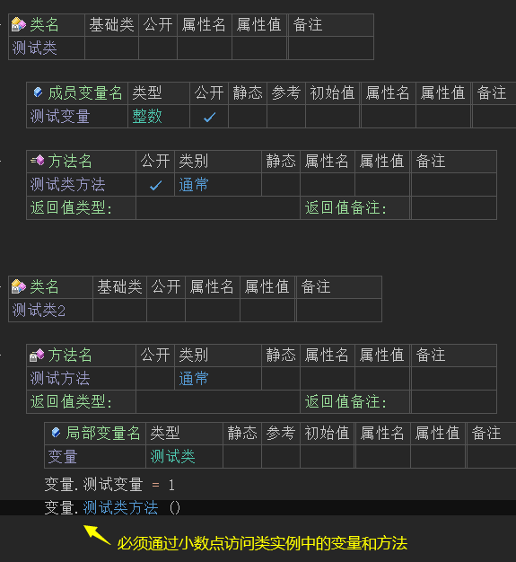
3.5 基本属性表
(1) 基础类
指定本类的基础类名称，可以是“单名称/全名称”，也可以是空文本(表示无基础类)。
如果定义了非空基础类，当前类将自动继承所有来自该基础类的内容，如果该基础类还有基础类，将一并继承过来，此时本类称为这些类的“继承类”。
注: 有一些编程语言也称“继承类”为“子类”，“基础类”为“父类”，意思是一样的。
继承类访问其直接/间接基础类中的成员不需要其为公开状态。
(2) 公开
指定本类是否对外公开。
公开类可以在所处包外部被访问，而非公开类只能在所处包内部被访问。
如下图所示：文件1的包名和文件2的包名不一致，文件1想要使用文件2中的类，必须公开文件2中的类。
而文件2中未公开的类，只能在“火山.软件”的包中使用。


4、变量
4.1 什么是变量？
变量相当于一个容器，可以随意的将任何数据放进去并且取出来。如一个杯子，可以在杯子中放任何口味的饮品，甚至也可以泡茶喝。只是变量中存放的是可变的数据。
变量的名称为“单名称”，首字符不能为数字且不能使用任何标点符号（“_”下划线字符除外）。
4.2 变量的定义
变量的定义可通过组合快捷键“Ctrl+L”进行创建，或者使用右键菜单中的“插入->插入新成员/局部变量”来进行定义变量操作。
在类中插入的变量为成员变量，在方法中插入的变量为局部变量。
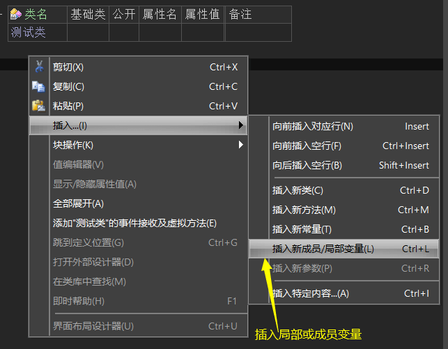
定义变量后输入名称并在“类型”一栏填写自己需要的类型即可。
如下图所示，在测试类中定义了一个类型为“整数”的“成员变量1”。
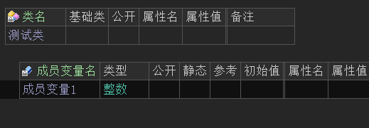
如果想要新增变量还可以在已有变量的基础上，按“Enter”(回车键)增加新的变量。
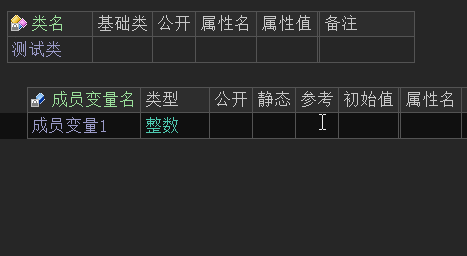
4.3 变量的分类
变量有几种类型，每种类型都有不同的作用，并且变量存在作用域，并不是随意定义一个变量就可以在程序的任意位置被访问到。
根据作用范围的不同，变量可以分为“成员变量”和“局部变量”。
如下图所示：
“成员变量”位于类的子语句体内并且可以看到和方法语句位于同级。而“局部变量”只能位于方法的子语句体内。
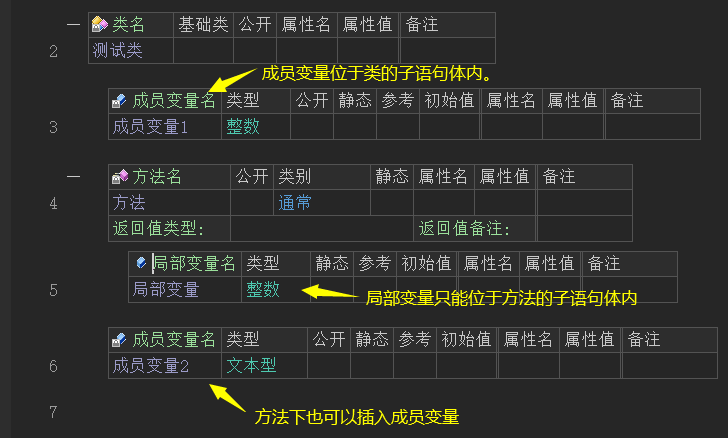
4.3.1 成员变量
成员变量可以在当前类的所有非静态方法中调用，如果某个方法勾选了静态将不能使用这个非静态变量。
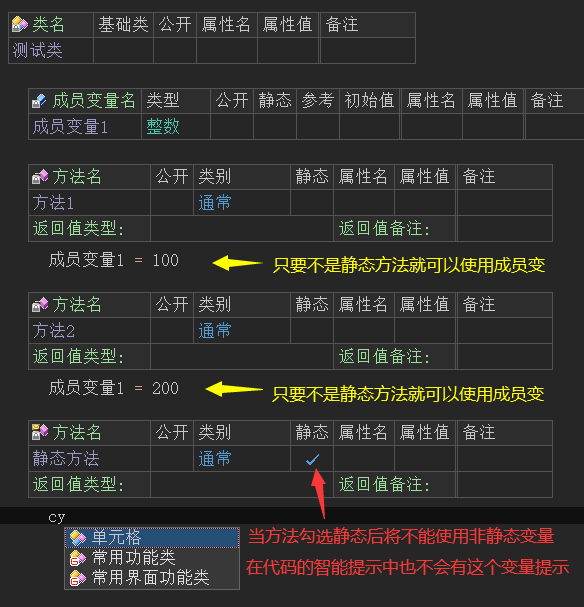
如果想要在静态方法中使用这个变量，必须也将变量设置为静态变量才可以。
如下图所示：当成员变量被勾选静态后，静态方法内输入“cyb”可以正常的提示“成员变量1”证明可以被正常使用。
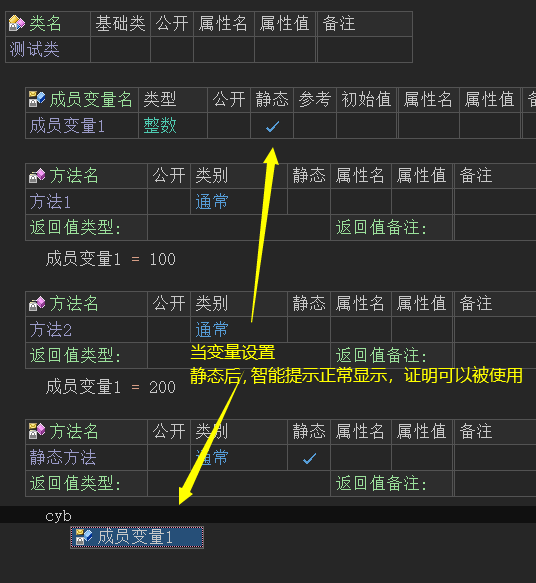
4.3.2 局部变量
局部变量只能在当前方法中被调用，其它方法无法使用，并且只能在变量定义表下方被使用。
如下图所示，定义的两个局部变量只能在变量定义表下调用。
温馨提示：局部变量只有在当前方法被调用的时候才会去向系统申请内存，当方法执行结束后，变量会被系统回收释放，因此局部变量是非常节省系统内存的。建议在程序开发过程中，能使用局部变量的就不要去定义成员变量。
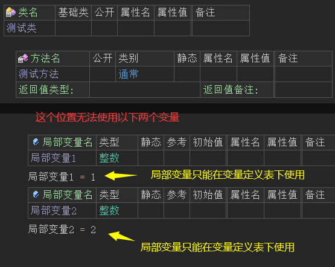
变量根据属性不同，还可以分为“公开变量”、“静态变量”和“参考变量”。
4.3.3 公开变量
当变量公开后可以被其它类访问。
注：仅针对成员变量，局部变量无此属性。
而非公开变量只能在本类或者其继承类中访问。
4.3.4 静态变量
静态变量即勾选“静态”后的变量称为静态变量，静态变量又分为成员静态变量和局部静态变量。
如下图所示：
成员静态变量有以下特点：
(1) 静态变量在所处类载入后即保持始终存在，并且未存放在类的对象实例中，而只存放在类信息本身中，所以无论定义多少类对象实例，静态成员变量都只存在一份。
(2) 由于静态成员变量存放在类本身中，所以在其所处类/继承类外部需要以“所处类名.静态成员变量名”的方式访问。
利用成员静态变量的特点可以实现类似全局变量的效果，如下图所示，定义了一个成员静态变量后在其它任何类中都可以访问。
如下图所示，如果定义了“测试类”的实例变量去访问“成员静态变量”，虽然代码能被编译器接受但是会提示警告信息，并且火山编译器会自动替换成对应的类去访问。
除此之外，无论定义了几个“测试类”的对象变量，“测试类”的“静态成员变量”始终只存在一份，因此黄色箭头指向的代码所访问的“静态成员变量”，实际上都是同一个。
(3) 由于静态变量初始化时不存在所处类实例对象，因此所静态的变量如果存在“事件方法”将不会自动挂接其事件到其所处类，需要在必要的时候通过“挂接事件()”方法手动挂接事件。
如下图所示，假设“测试类”中存在事件方法，如果想要触发事件，需要通过“挂接事件()”方法手动挂接事件。
4.3.5 参考变量
注意：在火山视窗平台中不支持参考变量，勾选参考后将会如下图所示。
因此所有关于参考变量的介绍全部是基于火山安卓平台展开。
(1) 什么是参考变量？
想要了解什么是参考变量，首先要清楚什么是对象实例，定义一个变量即可理解为创建了这个类的对象实例，勾选参考后等于取消了对这个对象实例的创建。
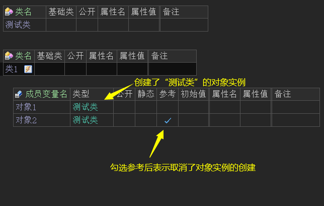
用更加通俗的解释来说，比如手机中的联系人就相当于“对象实例”，而联系人条目就相当于“参考变量”。
(2) 参考变量的特点
参考变量不会创建对象实例，而是用作保存到其它对象实例的指向性信息(即参考)，如果想要访问参考变量中的数据，必须首先赋值（创建其对象实例）。
例如：通过手机联系人条目(参考变量)是无法进行拨打电话(访问对象数据)操作的，必须获取到联系人条目中存储的电话号码(创建对象实例)才能进行拨打电话操作。
如下图所示，“对象2”因为是参考变量因此不能直接访问其中的方法，必须进行赋值操作后才可以访问。
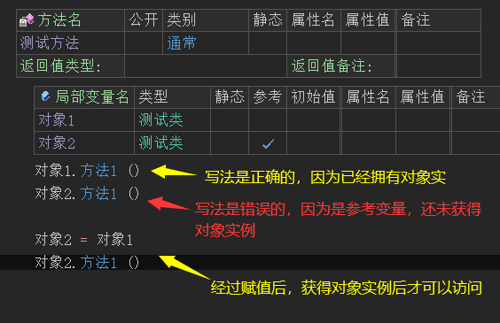
需要注意的是，对象之间的赋值必须保证数据类型一致，或者被赋值的对象是赋值对象的基础类(父类)。
如下图所示，因为“类2”是“类1”的基础类(父类)，因此即使是数据类型不同的情况下也可以进行赋值操作。
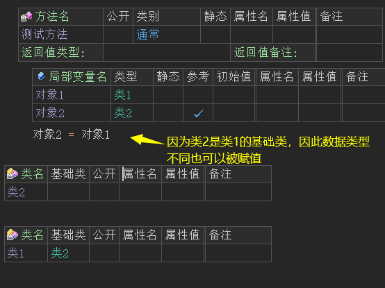
(3) 对象实例的获取办法
1. 如上述“参考变量的特点”中所示的直接赋值形式。
2. 通过所提供的类方法创建：
例如：在安卓类库中的“屏幕度量信息类”声明了属性禁止创建对象，如果遇到这种类在定义变量的时候就需要勾选参考。
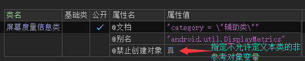
如果不勾选参考直接使用，编译器会报错，如果在日常开发过程中遇到类似的错误，就证明定义的变量需要勾选参考。
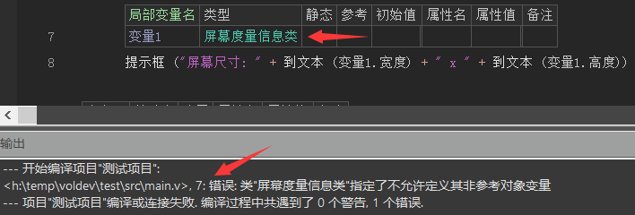
如果指定类不允许非参考变量，通常在此类中都有相关的创建实例对象的方法，例如：屏幕度量信息类中就有“获取()”方法，可用于获取屏幕度量信息类的对象实例。
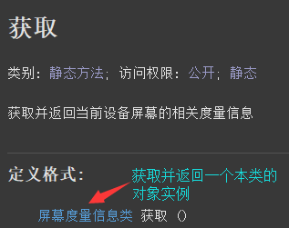
屏幕度量信息类的正确使用方式如下所示：
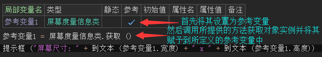
总结: 如果某个类指定了不能直接定义其对象实例变量，那么肯定可以通过调用某个方法获得其对象实例。绝大多数情况下该方法由此类自行提供，名称中一般包括“创建/从XX创建/新建/获取”之类的字样，并且该方法一般为静态方法。
如下图所示为创建“可绘制对象类”的实例方法：
如下图所示“可绘制对象类”的用法：
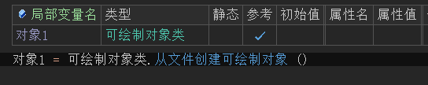
3. 常见错误：
(1) 被遗漏的参考属性：
在日常开发过程中，自定义的类实例对象进行赋值操作时，不勾选参考编译器也不会报错，也可以正常编译通过。
但是这样的用法会导致编译器重复创建对象实例，从而导致程序执行效率降低，占用不必要的内存空间。
所以在进行对象赋值操作时，即便编译器没有报错也要检查是设置了“参考”属性。
注意：整数、小数等基本数据类型不需要勾选参考。
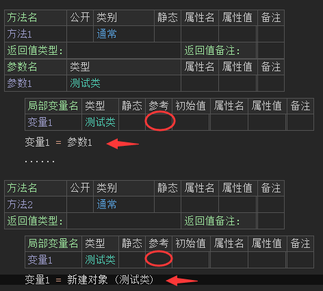
(2) 使用了空参考变量：
如下图所示，虽然对“局部变量”进行了赋值操作，但是依然是错误的写法，因为“成员变量”也是参考变量，必须保证“成员变量”是非参考变量才可以进行如下操作。
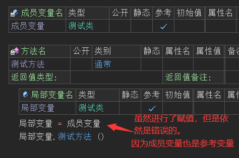
如果你不确定“成员变量”是否拥有实例对象，可以通过如下图所示的方法进行操作，避免程序出现闪退等异常问题。
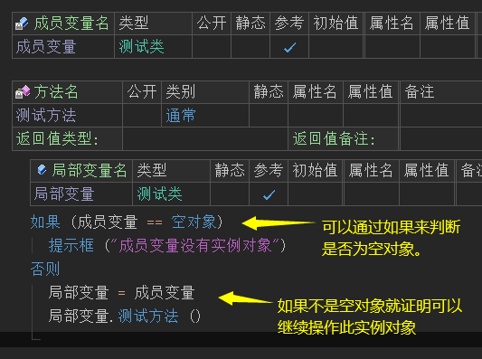
4.4 变量的初始值
变量的初始值设置大致分为以下三种类型，“基本数据类型”、“类数据类型”和“数组数据类型”，每种类型的初始值都是不同的。
4.4.1 基本数据类型变量
在基本数据类型中，数值型(整数/小数/长整数/短整数)变量的初始值为0，逻辑型变量的初始值为假，文本型变量的初始值为""(即空文本)
如果不想使用默认初始值，也可以如下图所示在表格中设置初始值或者通过代码设置初始值。
变量初始值的设置除了直接使用立即数外，还可以使用“类名.常量名”进行设置。
使用“类名.常量名”，优点是便于记忆防止输入错误。
如果常量在当前类中，也可以省略类名直接输入常量名字，如下图所示：
如果要设置的文本型数据为多行文本，可以打开“初始值编辑器”设置内容。
在打开的初始值编辑器中输入想要设置的内容即可。
安卓平台将自动生成“\n”换行符。
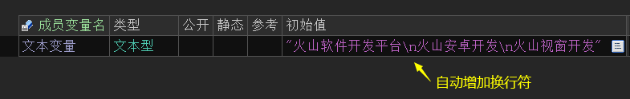
视窗平台将自动生成“\r\n”对文本数据进行换行。
4.4.2 类数据类型变量
(1) 对于类数据类型的变量，除资源类外其它任何类数据类型都不支持在初始化表格中设置初始数据。
对于火山平台中的资源类型，设置的初始值最终会被火山编译器处理打包到软件程序内部。
注：火山中所引用的外部资源，火山源文件只是引用其文件路径，因此外部文件不能删除，删除后将无法正常编译通过。当程序编译完成后，引用的文件会打包到程序内部，因此不会再依赖引用的外部文件。
火山安卓平台资源类型演示：
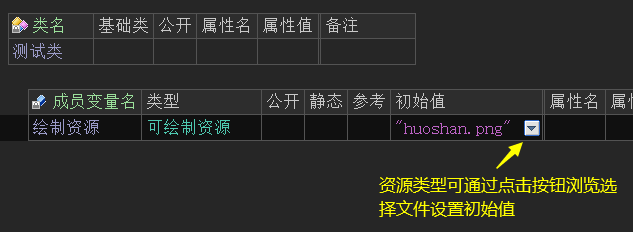
火山视窗平台资源类型演示：
(2) 对于火山安卓平台，参考变量其默认值为空对象，非参考变量则为对应的对象实例。
(3) 对于火山视窗平台，由于不支持定义参考型数据，因此所有非基本数据类型变量均为对应的对象。
4.4.3 数组类型变量
(1) 基本数据类型数组的初始值如下所示，大括号开始大括号结束的形式，每个成员之间用英文的逗号分隔。
(2) 如果基本数据类型数组未指定初始值，但指定了成员数(如下图所示)，则数值型数组变量的每个成员初始值为0，逻辑型数组变量的每个成员初始值为假。
(3) 其它所有数据类型(包括文本型)数组变量的每个成员初始值：如果为火山安卓平台则为空对象，为火山视窗平台则为对应的对象实例。
因此在火山安卓平台中，对于非数值和逻辑型的数组，其每个成员在使用前必须首先被单独赋值，如:
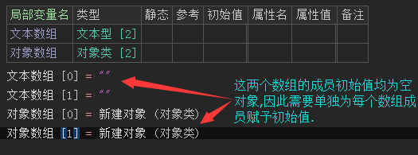


5、常量
5.1 什么是常量？
常量和变量一样，都是存放数据的容器，不同之处如下：
(1) 常量只能在定义时被赋予初始值，不能在程序运行后进行修改，如下图所示的写法是错误的。
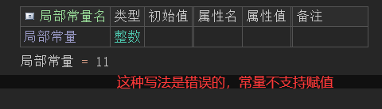
(2) 常量设置初始值时，只能提供立即数，如下图所示提供一个其它常量作为初始值是错误的。
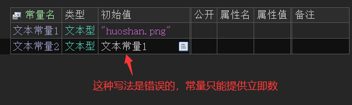
(3) 常量的数据类型只能为基本数据类型或资源数据类型（例如：安卓中的可绘制资源，视窗中的视窗文件资源）。
(4) 常量的“静态”固定为真不可修改，即:常量并未存放在类的对象实例中，而只存放在类信息本身中，所以无论定义多少类对象实例，常量都只存在一份。因此常量的访问方式与静态成员变量的访问方式是一样的，在其所处类/继承类外部需要以“所处类名.常量名”的方式访问，如下图所示：
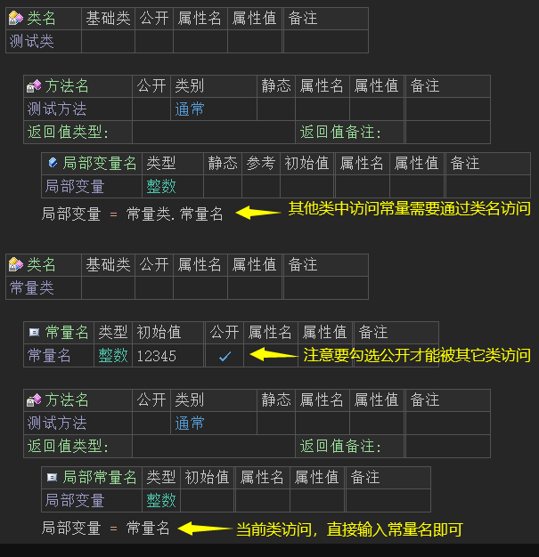
5.2 常量的定义
常量的定义可通过组合快捷键“Ctrl+B”进行创建，或者使用右键菜单中的“插入->插入新常量”来进行定义常量操作。
在类中插入的常量为成员常量，在方法中插入的常量为局部常量。
定义常量后输入名称并在“类型”一栏填写自己需要的类型即可。
如下图所示，在常量类中定义了一个类型为“整数”的“成员常量1”。
如果想要新增常量还可以在已有常量的基础上，按“Enter”(回车键)增加新的常量。
5.3 常量的分类
常量和变量一样都存在作用域，根据作用范围的不同，可以分为“成员常量”和“局部常量”。
如下图所示：
“成员常量”位于类的子语句体内并且可以看到和方法语句位于同级。而“局部常量”只能位于方法的子语句体内。
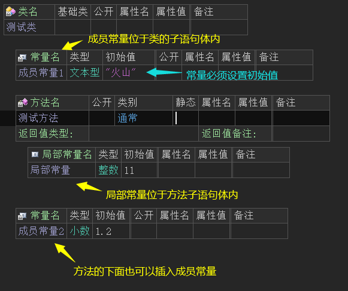
5.3.1 成员常量
成员常量可以在当前类的所有方法中调用，包括静态方法。
5.3.2 局部常量
局部常量只能在当前方法中被调用，其它方法无法使用，并且只能在常量定义表下方被使用。
如下图所示，定义的两个局部常量只能在常量定义表下调用。
5.3.3 公开常量
当常量公开后可以被其它类访问。
注：仅针对成员常量，局部常量无此属性。
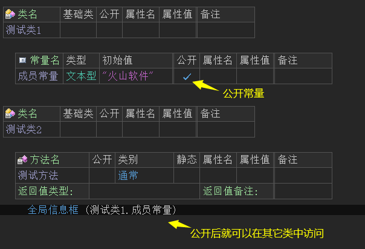
而非公开常量只能在本类或者其继承类中访问。
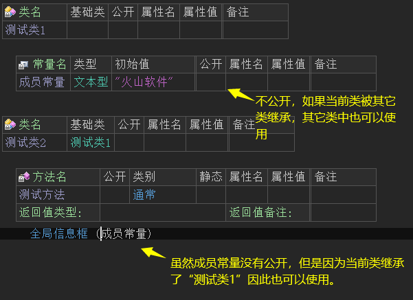
5.4 常量的初始值
常量的初始值设置大致分为以下两个类型，“基本数据类型”和“资源数据类型”。
在基本数据类型中，直接在“初始值”一栏提供对应的数据类型即可，如下所示：
如果为资源数据类型，需要提供对应资源的立即数，火山平台会自动处理所引用的资源数据。
如下图所示，火山视窗平台中的“视窗文件资源”需要提供一个文本型的文件相对路径或绝对路径，可直接在初始值输入或者通过下拉按钮浏览选择。
如下图所示，火山安卓平台中的“可绘制资源”也需要提供一个文件路径的立即数。
如果要设置的文本型数据为多行文本，和变量一样设置初始值一样，也可以打开“初始值编辑器”设置内容。
在打开的初始值编辑器中输入想要设置的内容即可。
安卓平台将自动生成“\n”换行符。
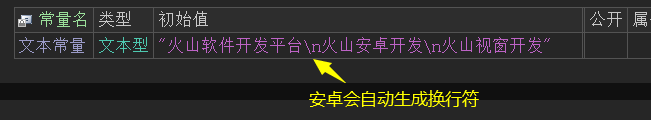
视窗平台将自动生成“\r\n”对文本进行换行。
如果常量是数组类型，其数组符号内可以提供成员数也可以不提供，需要注意的是如果提供了成员数则务必保证初始值设置的数量和提供的成员数一致。


6、方法
6.1 什么是方法？
一个完整的程序中可能有成千上万个类，每个类中可能有成千上万个语句，为了方便程序编写和设计，火山将程序的类分割成一个一个较小的单元，这些单元被称为“方法”。
方法可以用作一系列命令的封装，可以让复杂的代码简单化，提高代码复用性、可读性，更加有利于程序的模块化开发。
(1) 方法的定义
火山方法的定义可以使用“Ctrl+M”快捷键进行创建，或者使用右键菜单“插入 -> 插入新方法”进行定义。
(2) 方法的分类
在火山中方法根据用途的不同，分成以下几类：
1. 通常方法
2. 静态方法
4. 属性方法
5. 事件方法
6. 全局静态方法
7. 虚拟方法
除了以上类型外，火山中还存在两个固定方法“类_初始化”和“类_清理”，用于对象的初始化和清理数据操作。
类_初始化方法
此方法会在类对象被创建时自动调用，该方法不携带任何参数并且不返回值，对是否需要公开没有任何要求，如下图所示：
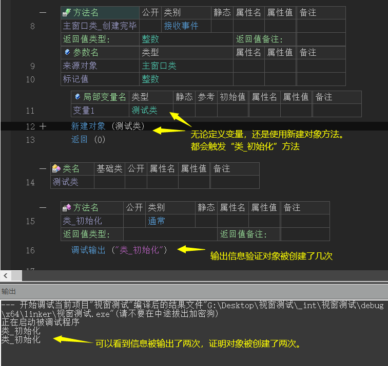
如果你想在对象被创建的时候初始化一些数据，可以在此方法下操作,如下图所示：
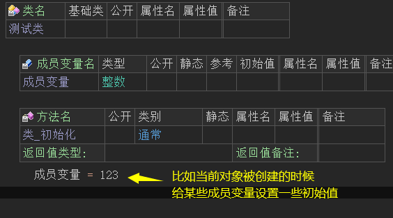
类_清理方法
此方法会在类对象被销毁时自动调用，该方法不携带任何参数并且不返回值，对是否需要公开没有任何要求。
注意：本方法在火山安卓平台中不被支持，因此下面演示火山视窗平台。
如果你想在对象被销毁的时候清理一些数据，可以在此方法下操作,如下图所示：
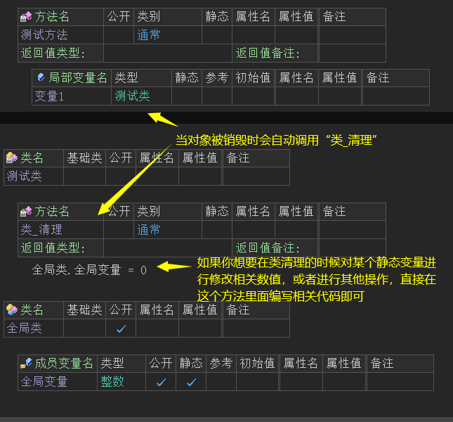
提示: “类_初始化”和“类_清理”方法在火山中可以通过按下“Ctrl+I”组合键调用对应对话框自动插入对应空方法，或者直接使用“Ctrl+M”新建方法后手动填写方法名。
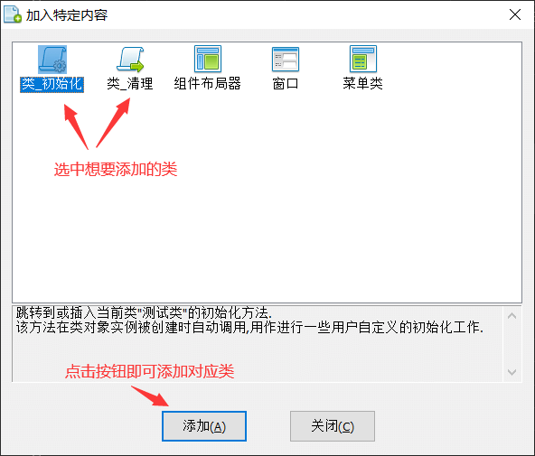
(3) 注意事项
注意：在同一个类中方法名称不允许重复，如下图所示是错误的。
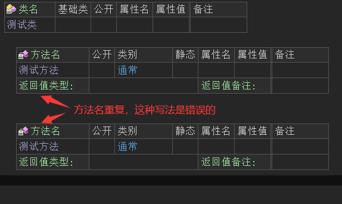
但是有一个情况是例外的，读写属性方法名可以重复，但是也只能重复一次，如下图所示：
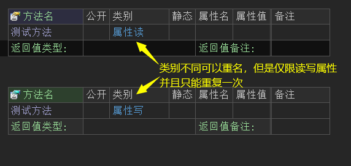
6.2 定义通常方法
如下图所示，即表示定义了一个通常方法：
新建一个类，在类中新建一个方法，并且方法的类别选择“通常”，所定义出来的方法就叫通常方法。
调用通常方法代码如下图：
1. 在外部其他类中调用这个方法首先需要公开此方法。
2. 调用方法的时候需要定义变量，例如：在窗口被首次激活的时候定义“测试类”变量并调用这个方法。
运行结果如下图：
最终按下F5键当程序窗口出现后，会显示一个信息框，证明通常方法被调用成功。
6.3 方法的参数与数据传递
在火山平台中所有方法类型都可以添加多个参数，进行数据的传递操作。
注：读属性方法不支持填写参数，写属性方法可提供一个参数。
6.3.1 参数的添加
光标定位“返回值类型”一栏，按下“Enter”(回车键)即可实现参数的添加。
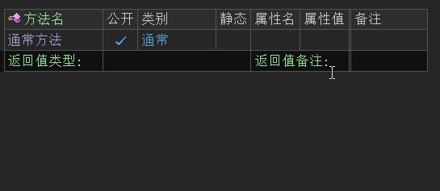
也可以右键菜单“插入 -> 插入新参数”或使用组合快捷键“Ctrl+R”进行添加参数。
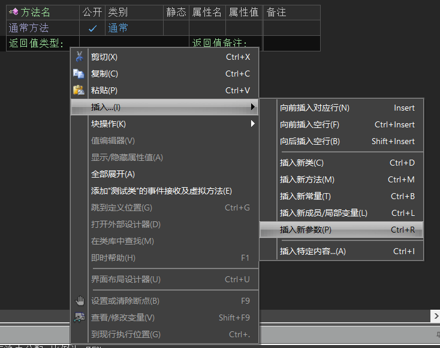
6.3.2 参数的结构
如下图示，参数结构为参数名、类型、属性名、属性值和备注信息。
其中“参数名”和“类型”为必填项，属性和备注可根据自己的需求决定是否填写。
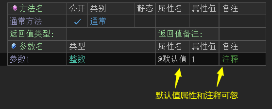
6.3.3 参数的数据传递
在火山中的参数的数据传递大致以下几种方式：
(1) 立即数值传递；
(2) 对象传递；
(3) 文本型的参考传递
1. 立即数值传递
代码编写如下图：
(1) 给通常方法增加两个参数，并将两个参数进行结合起来显示在信息框中。
(2) 在主窗口被创建完毕后，调用此方法并传递两个文本立即数过去。
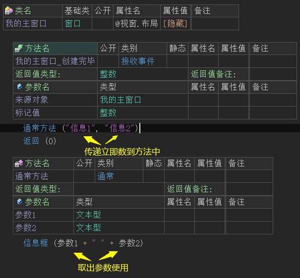
运行效果如下图：
最终可看到两个提供的文本立即数被结合起来显示在了信息框中，证明参数传递成功。
这就是立即数值的数据传递，传递后直接使用即可。
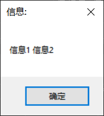
2. 对象传递
代码编写如下图：
(1) 首先定义一个“测试类”，用来模拟一个对象数据。
(2) 定义一个通常方法，插入一个测试类参数，并在方法中取出参数数据。
(3) 在窗口创建完毕后调用这个通常方法，实现对象数据传递。
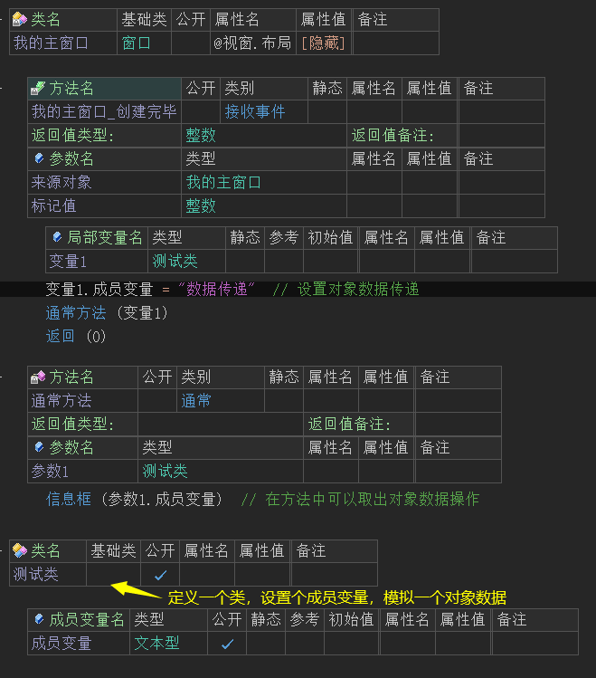
运行效果如下图：
最终可以看到信息框中会显示对象中存储的文本数据，证明对象数据传递成功。
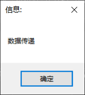
当使用对象传递数据时，会自动进行参考传递，即参数会拥有原数据的内存地址，从而可以通过参数来返回数据。对象的参考传递在火山安卓和火山视窗中均适用。
如下图所示：
(1) 在通常方法中修改参数数据。
(2) 在窗口创建完毕下，调用通常方法传递测试类对象，并在此方法后取出对象中的数据。
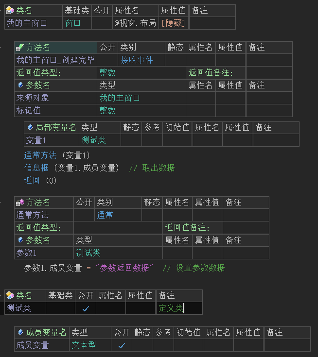
运行效果如下图：
最终可以看到信息框中会显示参数设置的数据，证明数据传递成功。
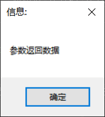
3. 文本型的参考传递
在火山视窗平台中除文本型外，其它基本数据类型都不支持参考传递。
注：在火山安卓平台中，所有基本数据类型都不支持参考传递。
下面来演示一下文本型的参考传递，代码编写如下图：
(1) 在通常方法中修改文本型参数数据。
(2) 在窗口创建完毕下，定义一个文本型变量，经过参数传递后，取出变量中的数据。
运行效果如下图：
最终可以看到信息框中会显示经过参数修改的数据，证明文本型可以进行参考传递。
6.3.4 参数的默认值属性
提供了“@默认值”属性后，证明此参数可以在调用的时候被省略，火山会自动处理“属性值”为参数数据进行传递。
注意：如果参数类型为实例对象，则“@默认值”属性的属性值只能为“空对象”。
代码编写如下图：
1. 给通常方法增加两个参数，并将两个参数进行结合起来显示在信息框中，给其中一个参数设置默认值。
2. 在主窗口被激活后，调用此方法忽略“参数1”只给“参数2”传递文本数据。
运行效果如下图：
最终可看到“默认值”也显示在了信息框中，证明默认值设置成功。
6.4 方法的返回值
方法是一个独立完成某个功能的程序块，在需要返回值的时候可以提供返回值进行操作，如果不需要也可以不提供。
如果方法需要返回值，则需要在方法的“返回值类型”一栏进行填写即可，如下图所示返回一个整数类型。
如果该方法提供了返回值类型，则必须使用“返回()”方法返回对应的类型数据。
如下图所示，返回值类型为整数，就必须返回一个整数类型，可以提供变量，常量或者立即数，只要是整数类型就可以。
不提供返回值或者返回值类型不匹配都是错误的，如下图：
返回值是对象则需要返回对应对象实例，如下图：
如下图所示，如果返回值为父类，则可以提供对应的子类实例对象。
6.5 方法的嵌套调用
方法与方法之间的交互是通过参数和返回值来联系的，一个方法可以有多个参数，参数值除了提供变量、常量、立即数外，如果指定方法有返回值并且和方法参数类型匹配也可以把方法作为参数写入。
如下图所示：
运行结果如下图：
6.6 方法的递归调用
方法的调用一般情况下都是一个方法调用另外一个方法，如果方法自己调用自己这种情况被称为递归调用，又称递归算法。需要注意的是，使用递归算法时，必须要保证有一个结束条件，否则会陷入死循环中，导致程序卡死闪退等问题。
例如：数学运算中的求阶乘问题就可以利用递归算法实现，下面来实现一个简单的求阶乘的递归算法。
(1) 定义一个求阶乘的方法，提供一个要计算阶乘的正整数参数以及长整数返回值。
(2) 在方法的语句内首先对参数进行判断是否大于0，满足条件后在进行递归调用，否则程序会陷入死循环导致软件异常卡死等问题。
(3) 满足条件后进行乘法计算，乘数为方法参数，被乘数为方法本身，这样就满足了递归调用。
(4) 如果没有满足条件就让方法返回1，方便最后与正整数参数相乘得出最终结果。
在窗口被首次激活时调用一下这个方法，来计算一下5的阶乘。
最终成功拿到了计算结果，以上就是一个简单的递归算法实现的全部过程。
6.7 定义静态方法
(1) 静态方法与通常方法的区别在于，设置静态方法后，可以省去定义变量取调用方法的步骤，静态方法只需要通过“类名+方法名”的形式就可以调用。
如下图所示：
凡是勾选静态的方法，都可以称呼为静态方法。
(2) 在静态方法内部，只能访问其所处类或者其所处类的基础类中的成员常量或者静态成员变量。
如下图所示：
6.8 定义 支持以动态格式调用的静态方法
本方法其实也是静态方法的一种，如果静态方法所定义的第一个参数是类本身，那么这样的方法就可以称为是“支持以动态格式调用的静态方法”。
本方法有两种调用形式，既可以通过类名去访问这个方法，又可以定义变量访问这个方法。
如下图所示：
在“测试类”中定义了一个名为“动态方法”的静态方法，第一个参数提供了“测试类”自身，那么在程序中调用这个方法时，就会有两种形式。
(1) 第一种方式是标准的静态方法访问方式。
(2) 第二种就是优化后的方式，其第一个参数被移动到方法访问对象上，这种方式在编译时将被自动转换为第一种方式。
6.9 定义属性
在火山中的属性大致分为三个类别：可读属性，可写属性，可读写属性。可读写属性又分为方法属性和变量属性。
6.9.1 定义可读属性
读属性用于读取当前类中的某些数据值进行返回，其格式必须满足以下条件：
(1) 插入的方法必须公开，且类别需要选择“属性读”。
(2) 不能为静态方法(实际上静态方法也可以用作定义属性，通常情况下用不到，知道即可)。
(3) 不可以提供参数。
(4) 必须提供一个返回值。
如下图所示，在“测试类”中定义了一个返回值为“文本型”的读属性方法，并返回了一个成员变量。
需要注意的是“属性读”虽然是以方法的形式定义，但是在调用这个属性的时候不能使用“变量1.属性读()”的形式访问，正确的访问如下图所示，不需要提供括号。
6.9.2 定义可写属性
写属性用于设置当前类中的某些数据，其格式必须满足以下条件：
(1) 插入的方法必须公开，且类别需要选择“属性写”。
(2) 不能为静态方法(实际上静态方法也可以用作定义属性，普通用户无需掌握，知道即可)。
(3) 必须提供一个参数，提供的这个参数被称为属性值。
(4) 不允许提供返回值。
如下图所示，在“测试类”中定义了一个属性值为“文本型”的写属性方法，并将属性值赋值给了一个成员变量。
虽然“属性写”也是以方法来定义，但是在调用这个属性的时候不能使用“变量1.属性写()”的形式访问，正确的访问如下图所示，属性名和属性值之间用等于号连接。
除上述访问方式外，写属性还可以直接在属性表中访问，如下图所示：
写属性除了直接提供对应值外还支持备选列表，通过备选列表设置常用属性值。
视窗平台设置如下图所示，在方法的属性栏使用“@列表选择项”属性值可打开编辑器进行设置。
多条备选值用换行分隔，如果属性值为文本型注意需要提供英文状态下的双引号。
最终设置完成后如下所示，会自动添加\r\n换行，双引号也会自动转义。
如果在安卓平台下，设置完成后会自动使用\n分隔。
无论是安卓还是视窗，最终在使用时效果是一样的，可以通过下拉列表选择属性值，如下图所示：
属性表中的备选列表，除了上述的备选列表形式外，还支持“常量类”形式的备选列表。
“常量类”与“@列表选择项”不同之处在于，常量类的内容是固定的，一旦设置常量类将不支持自定义内容（只能去常量类扩充，但软件需要重新编译），而“@列表选择项”不受此限制。
常量类的定义如下图所示：
注：当前类设置“@常量类”属性后，当前类中只能提供常量，不可以提供变量、方法。
常量类的使用：
(1) 写属性中使用常量类也很简单，首先需要将参数类型设置成对应的常量类的类名。
(2) 然后通过参数名来判断是否为指定常量，从而进行相应的代码操作。
(3) 调用本属性的时候就可以在属性栏下拉选择，如果通过代码设置就需要通过“类名+常量名”的形式设置。
6.9.1 定义可读写属性
可读写属性分为“方法读写属性”和“变量读写属性”，这两个的不同之处在于，方法属性可以在方法中编写代码，对属性值进行一些其它操作，而变量属性不支持。
(1) 方法读写属性
方法读写属性其实就是将“属性写”和“属性读”两个方法配合使用，从而实现同一个属性名既可以读又可以写的效果。
如下图所示，当读写属性配套使用时，方法名可以一致。
注意：读写属性配套使用时，两者的名称必须完全一致，而且读属性方法的返回值数据类型必须与写属性方法的参数数据类型一致，如下图所示的写法是错误的：
只要读写属性按照规范编写，就可以如下图所示进行调用：
(1) 在窗口被首次激活时定义“测试类”变量。
(2) 定义后就可以在属性表中调用“属性方法”写属性用于设置属性值。
(3) 写属性设置后就可以通过同名读属性取出设置的属性值。
当程序运行后，设置的属性内容可以被成功读取。
(2) 变量属性
变量属性即通过成员变量来当属性使用，如下图所示，只要在成员变量的属性表中设置“@属性变量”属性值设置为“真”，就可以在此类变量的属性表中使用这个成员变量设置数据。
当程序运行后，设置的属性内容可以被成功读取。
6.10 定义事件方法
事件方法是用来对外发送通知时使用。
例如：用作“按钮”的类在用户单击按钮时会向外部发送“被单击”事件，用作“时钟”的类会向外部定时发送“时钟周期”事件等等。
6.10.1 定义事件需要满足以下条件：
(1) 插入的方法“类别”必须设置为“定义事件”。
(2) 访问权限必须为公开。
(3) 不允许设置静态。
(4) 必须填写返回值，并且返回值只能是整数。
(5) 方法内不允许有任何代码。
(6) 事件方法的参数没有要求，根据自己的需求决定是否提供。
如下图所示，在“测试类”中定义了一个名为“测试事件”的事件。因为事件不能平白无故触发，必须要有一个条件，因此这里还定义了一个“触发事件”的通常方法来调用这个事件。
6.10.2 自定义事件的调用与触发：
以火山视窗为例，在窗口类中定义“测试类”的成员变量，光标定位“类型”会出现一个小按钮，点击可出现事件列表选择后可添加添加“测试事件”的事件接收方法。
如下图所示，为对应“接收事件”添加完成后的效果。
当然也可以通过手动插入方法实现“接收事件”方法，只要满足以下要求：
(1) 方法名必须为“类名_事件方法名字”。
(2) 类别选择“接收事件”。
(3) 方法不允许设置静态。
(4) 返回值类型固定为整数
(5) 方法的第一个参数必须为固定的“来源对象”参数，其数据类型为发送事件的类，用作提供具体是哪个对象发送过来的事件。
(6) 方法的第二个参数必须为固定的“标记值”参数，其数据类型为整数，用作动态挂接事件时使用。
(7) 方法后续的参数表必须和“事件定义方法”的参数表一致，用于获取传递过来的参数数据。
(8) 最后方法的返回值将被传递回在事件定义方法所处类中调用该事件定义方法的调用方（如上述6.10.1 所示，会传递给“触发事件”方法中的“测试事件”的调用方）。
事件都是存在触发条件的，因此还需要如下图所示，手动调用“变量1.触发事件()”方法，才会触发“测试类_测试事件”方法。
需要注意的是，由于同一类的同一事件均被发送到同一个事件接收方法，因此需要使用“来源对象”和“标记值”两个参数进行区分。
如下：利用“来源对象”参数来区分事件。
通过“标记值”参数判断通常用于，对象是局部变量的情况，不过因在火山视窗中局部变量用完会立刻释放导致事件无法触发，因此在火山视窗中如果该对象存在事件则不建议设置为局部变量。
如下所示为火山安卓平台中，利用“标记值”来区分事件来源，需要使用“挂接事件()”方法。
6.11 定义全局静态方法
所谓全局静态方法就是，此方法调用的时候不需要输入类名，也不用定义类变量，直接输入方法名即可调用，并且可以无视包名，可以随意的跨包调用。
定义方法如下图所示：
(1) 在方法所处类的属性栏设置“@全局类”，属性值设置为“真”。
(2) 插入的方法需要同时勾选公开和静态，对于返回值类型和参数表没有特殊要求，根据自己的需求填写即可。
定义完成后，就可以在火山程序的任何方法下调用（定义事件方法除外），如下图所示：
6.12 定义虚拟方法
6.12.1 什么是虚拟方法？
如果在火山中，某个类中的某个方法不能满足使用需求，但是我们又不想重新定义一个方法来操作，这个时候就可以利用火山的“虚拟方法”来实现对这个方法进行重写，这样的重写操作在火山中就称为虚拟方法。
例如：一家销售公司每个人都有底薪2000元，每个人的业绩不同提成也不同最终得到的工资也不是不同的。那么这个底薪2000元就可以理解为是虚拟方法，员工A和员工B的提成不同，只需要重写这个2000元底薪加上各自的销售业绩就是实际工资，不需要额外建立员工A方法和员工B方法来单独计算。
6.12.2 虚拟方法的定义和调用
(1) 虚拟方法的定义
定义虚拟方法很简单，只需要在一个通常方法的属性名上填写“@虚拟方法”属性值提供“可覆盖”即可。
(2) 虚拟方法的调用
光标定位类名会出现一个按钮，点击可添加基础类的虚拟方法。
添加完成后如下图所示：
6.12.3 虚拟方法实例
下面以火山视窗为例实现一个简单的虚拟方法的实际应用案例：
(1) 假设有一家销售公司，他们公司的工资都是底薪+提成的形式，因此可以首先定义一个“基本工资类”并新增一个虚拟方法，将实际工资计算出来并返回。
(2) 但是某些员工是新员工，假设为“员工A”，他的工资需要在原薪资的结构上单独计算，因此需要继承一下“基本工资类”并添加“基本工资”虚拟方法。
(3) 假设财务忘记扣税，那么此时可以在此方法下重写本方法进行扣税，并返回扣税后的薪资。也可以进行其它操作，譬如员工迟到从提成里面扣除一些工资，这个就需要根据自己的需求来编写代码。
(4) 假设有一个十年的老员工，为“员工B”，老员工的提成为双倍提成，就可以在“基本工资”的虚拟方法下重写工资计算公式。
(5) 最后在窗口中插入一个“工资计算”方法用于计算最终工资，参数提供“基本工资类”和“提成”，并返回实际工资。
(6) 在主窗口创建完毕事件下，对员工A、B的工资进行计算，因为“员工A、B”都继承了基本工资类，因此其对象实例可以填写到“工资计算”方法中。
(7) 最终可以得出两个员工的真正工资。
员工A的实际工资为：1000(底薪) + 100(提成)-100(税) = 1000元
员工B的实际工资为：1000(底薪) + 100*2(提成) - 100(税) = 1100元
以上就是火山视窗中虚拟方法的实际应用案例，安卓虚拟方法例程下载，视窗虚拟方法例程下载


7、方法语句
7.1 表达式语句
在火山中所有的非嵌入式语句都可以称为表达式语句，表达式语句只能在方法中使用，用作提供具体方法的实现代码。
表达式由使用操作符组合在一起的语句单元组成，分为以下几类:
(1) 一元表达式，如: -变量1 、 (长整数)1
(2) 二元或多元表达式，如: 变量1 + 变量2、 变量1 * 123 * 变量2
(3) 命令或方法调用表达式，如: 方法1 (123)、 如果 (变量1)
(4) 表达式可以嵌套，如: -(变量1 + 变量2)、 如果 (方法1(变量1) == 真)
表达式中的语句单元可以是: 数据类型/变量/常量/参数/方法/名称类关键字/立即数等。
注意：在火山中的代码语句生成的线条只是样式，并非流程线，火山程序中只有子语句体的，即:
(1) 任何程序语句都可以拥有一条或多条下属语句，这些下属语句称为该语句的子语句体，该语句称为这些下属语句的父语句。
(2) 子语句体可以嵌套，也就是说子语句可以继续拥有子语句体。
如图:
语句行12-16是语句行11的子语句体;
语句行15-16是语句行14的子语句体;
语句行19-26是语句行18的子语句体;
语句行22-23是语句行21的子语句体;
语句行25-26是语句行24的子语句体.
在使用虚线标注子语句体的时候，系统对“如果”和“否则”语句进行了特殊处理，将两者的子语句体线连接起来了，这样看起来结构更清晰一些。
7.2 嵌入式语句
在火山视窗中以@字符开始嵌入的C++代码被称为嵌入式语句，详见视窗程序结构展示
在火山安卓中以@字符开始嵌入的java代码被称为嵌入式语句，详见安卓程序结构展示